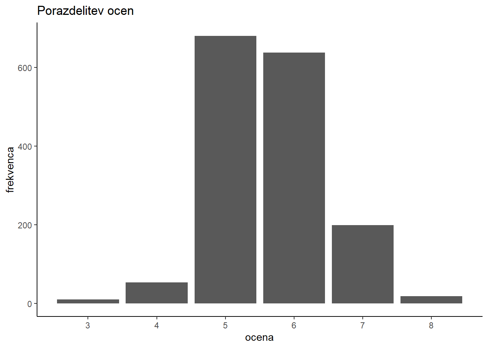
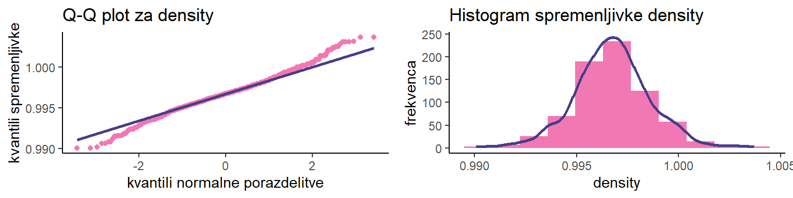

library(tidyr)
library(purrr)
library(dplyr)
library(ggplot2)
library(gridExtra)
library(corrplot)Domača naloga - Rdeče vino
Statistika 2024/25
1 Uvod
Kvaliteta vina je odvisna od številnih dejavnikov, od sort grozdja z različnimi lastnostmi, do vinarskih postopkov uporabljenih za njegovo predelovanje. Analiza kakovosti vina je pomembna tako za potrošnike, saj jim tako pomaga pri izbiri vina ter pri proizvjalacih, ki lahko na podlagi rezultatov analiz ugotovijo, katere tehnike pridelovanja, sorte grozdja, ipd. vpliva na kakovost vina.
V tem poročilu so predstavljene statistične analize podatkov kakovosti rdečega vina. Namen naloge je pripraviti poročilo, ki poda odgovore na vseh 5 zastavljenih vprašanj, ki se osredotočajo na kemijske lastnosti in njihov vpliv na kakovost vina. Uporabljati je bilo potrebno program R. Pri vsakem vprašanju je podan opis problema, opis uporabljenih statističnih metod za analizo problema ter rezultati analize in njihova interpretacija.
2 Podatki
2.1 Uporabljeni paketi
Za delo s podatki sem uporabljal pakete tidyr in purr za čiščenje in preoblikovanje podatkov, dplyr, ki je ustvarjen za delo s podatkovnimi okvirji ter ggplot2, gridExtra in corrplot za kvalitetne vizualne predstavitve distiliranih podatkov.
2.2 Branje podatkov
Podatki so shranjeni tako v csv kot v xlsx obliki. Odločil sem se, da bom uporabil podatke iz csv datoteke, saj za branje ni potrebna uporaba dodatnih paketov.
df <- "winequality-red.csv" |>
read.csv(sep = ";") |>
as_tibble()2.3 Predstavitev podatkov
Podatkovni okvir vsebuje različne kemijske lastnosti vin ter končno oceno kakovosti ocenjevalcev vina. Sestavljen je iz 1599 vrstic z 12 numeričnimi spremenljivkami.
manjkajoče vrednosti
map_df(df, \(col){
is.na(col) |>
grep(pattern = "TRUE") |>
length()
}) |>
pivot_longer(cols = everything(df)) %>% {
names(.) <- c("spremenljivka", "NA")
.
}# A tibble: 12 × 2
spremenljivka `NA`
<chr> <int>
1 fixed.acidity 0
2 volatile.acidity 0
3 citric.acid 0
4 residual.sugar 0
5 chlorides 0
6 free.sulfur.dioxide 0
7 total.sulfur.dioxide 0
8 density 0
9 pH 0
10 sulphates 0
11 alcohol 0
12 quality 0Podatki so že očiščeni, zato dodatno delo ni potrebno.
naključni vzorec velikosti 5
df |> slice_sample(n = 5) |> knitr::kable()| fixed.acidity | volatile.acidity | citric.acid | residual.sugar | chlorides | free.sulfur.dioxide | total.sulfur.dioxide | density | pH | sulphates | alcohol | quality |
|---|---|---|---|---|---|---|---|---|---|---|---|
| 7.7 | 0.660 | 0.04 | 1.6 | 0.039 | 4 | 9 | 0.99620 | 3.40 | 0.47 | 9.4 | 5 |
| 7.8 | 0.550 | 0.35 | 2.2 | 0.074 | 21 | 66 | 0.99740 | 3.25 | 0.56 | 9.2 | 5 |
| 5.4 | 0.420 | 0.27 | 2.0 | 0.092 | 23 | 55 | 0.99471 | 3.78 | 0.64 | 12.3 | 7 |
| 7.5 | 0.755 | 0.00 | 1.9 | 0.084 | 6 | 12 | 0.99672 | 3.34 | 0.49 | 9.7 | 4 |
| 13.7 | 0.415 | 0.68 | 2.9 | 0.085 | 17 | 43 | 1.00140 | 3.06 | 0.80 | 10.0 | 6 |
povzetek podatkov
sapply(df[names(df)], summary) |> knitr::kable()| fixed.acidity | volatile.acidity | citric.acid | residual.sugar | chlorides | free.sulfur.dioxide | total.sulfur.dioxide | density | pH | sulphates | alcohol | quality | |
|---|---|---|---|---|---|---|---|---|---|---|---|---|
| Min. | 4.600000 | 0.1200000 | 0.0000000 | 0.900000 | 0.0120000 | 1.00000 | 6.00000 | 0.9900700 | 2.740000 | 0.3300000 | 8.40000 | 3.000000 |
| 1st Qu. | 7.100000 | 0.3900000 | 0.0900000 | 1.900000 | 0.0700000 | 7.00000 | 22.00000 | 0.9956000 | 3.210000 | 0.5500000 | 9.50000 | 5.000000 |
| Median | 7.900000 | 0.5200000 | 0.2600000 | 2.200000 | 0.0790000 | 14.00000 | 38.00000 | 0.9967500 | 3.310000 | 0.6200000 | 10.20000 | 6.000000 |
| Mean | 8.319637 | 0.5278205 | 0.2709756 | 2.538806 | 0.0874665 | 15.87492 | 46.46779 | 0.9967467 | 3.311113 | 0.6581488 | 10.42298 | 5.636023 |
| 3rd Qu. | 9.200000 | 0.6400000 | 0.4200000 | 2.600000 | 0.0900000 | 21.00000 | 62.00000 | 0.9978350 | 3.400000 | 0.7300000 | 11.10000 | 6.000000 |
| Max. | 15.900000 | 1.5800000 | 1.0000000 | 15.500000 | 0.6110000 | 72.00000 | 289.00000 | 1.0036900 | 4.010000 | 2.0000000 | 14.90000 | 8.000000 |
Lahko opazimo, da se pojavijo samo ocene med 3 in 8 ter da je povprečna ocena \(\approx 5.5\). Spodaj je opis vseh spremenljivk.
| spremenljivka | tip | opis |
|---|---|---|
| fixed.acidity | numerični | kislost vina |
| volatile.acidity | numerični | hlapna kislost vina |
| citric.acid | numerični | vsebnost citronske kisline |
| residual.sugar | numerični | vsebnost sladkorjev |
| chlorides | numerični | vsebnost kloridov |
| free.sulfur.dioxide | numerični | vsebnost prostega žveplovega dioksida |
| total.sulfur.dioxide | numerični | celotna vsebnost žveplovega dioksida |
| density | numerični | gostota vina |
| pH | numerični | pH nivo vina |
| sulphates | numerični | vsebnost sulfatov |
| alcohol | numerični | nivo alkohola |
| quality | numerični | ocenjena kvaliteta vina |
3 Naloga 1. - grafično predstavljene porazdelitve
Grafično prikažite porazdelitev spremenljivk kislost, vsebnosti sladkorjev ter celoten žveplov dioksid. Grafično prikažite še porazdelitev kvalitete vseh vin. Narišite še histograme, ki prikazujo porazdelitev kislosti glede na kvaliteto vina. Interpretirajte rezultate.
3.1 Opis problema
V prvi nalogi se osredotočamo na raziskovanje porazdelitve nekaterih kemijskih lastnosti rdečega vina - kislost vina, vsebnostjo sladkorjev ter celotna vsebnost žveplovega dioksida. Predstavljene so tudi porazdelitve kvalitet vseh ocenjenih vin, preko česar bomo lahko dobili idejo, kako vplivajo te lastnosti na njihovo kakovost.
3.2 Opis uporabljenih statističnih metod
Porazdelitve podatkov so predstavljene s histogrami. Za boljšo oceno števila intervalov/razredov sem uporabil Sturges pravilo (Bobbit 2021), ki se poenostavi v formulo \(k = 1 + \log_2(n)\), kjer je \(k\) število intervalov in \(n\) skupno število elementov. Znotraj vsakega histograma je prikazana tudi porazdelitev ocen vina znotraj dane spremenljivke.
V pomoč sem si ustvaril funkcijo quality_histogram, ki prikaže podano spremenljivko col iz podatkovnega okvirja df s histogramom. Za število razredov uporabi vrednost bins_ocena, izračunano s Sturgesovim pravilom. Kot fill parameter vzame quality_factor, kjer so vrednosti spremenljivke quality.
quality_histogram
quality_histogram <- function(df, col) {
if (!("quality" %in% names(df))) {
message("couldn't find 'quality' column in df data frame.")
return(NA)
}
n <- nrow(df)
bins_ocena <- floor(1 + log2(n))
quality_factor <- factor(unlist(select(df, quality)))
unpacked <- unlist(select(df, all_of(col)))
col_name = gsub(pattern = "\\.", replacement = " ", x = col)
ggplot(df, aes(x = unpacked, fill = quality_factor)) +
geom_histogram(bins = bins_ocena) +
labs(
title = paste("Porazdelitev", col_name, "glede na oceno"),
x = col_name,
y = "frekvenca",
fill = "ocena"
) +
scale_fill_brewer(palette = "RdPu") +
theme_classic()
}3.3 Rezultati in njihova interpretacija
3.3.1 Porazdelitev ocen vina
graf
ggplot(df, aes(quality)) +
geom_bar() +
labs(
title = "Porazdelitev ocen",
x = "ocena",
y = "frekvenca"
) +
scale_x_continuous(breaks = seq(3, 8, 1)) +
theme_classic()
Porazdelitev ocen je precej simetrična. To pomeni, da so vrednosti enakomerno porazdeljene okoli srednje vrednosti. Najbolj pogosta ocena je 5, razpršenost podatkov je majhna.
3.3.2 Kislost vina
Opazno je, da je za spremenljivko fixed.acidity (kislost vina) porazdelitev nekoliko asimetrična desno, saj se rep porazdelitve rasteza v desno - večina podatkov je skoncentriranih bolj na levi strani.
graf
quality_histogram(df, "fixed.acidity")To bi lahko pomenilo, da je za to sorto vina preferirana nižja kislost, toda ker porazdelitev ne odstopa zelo od simetrične, tega ne morem trditi zagotovo.
Opazno je, da so ocene tudi podobno porazdeljene. Največ vin ima ocene 5 ali 6. Od vrednosti \(\approx 10\) in več je opazno, da imajo vina boljše ocene kot vina z nižjo kislostjo. Verjetno je razlog za to nižje število podatkov za vina s to oceno. Da bi lahko zagotovo trdil ali kislost vpliva na oceno vina, bi moral opraviti dodatne statistične teste.
3.3.3 Vsebnost sladkorjev
Porazdelitev vsebnosti sladkorjev je zelo asimetrična v desno. Večina vrednosti je med \(0\) in \(5\).
graf
quality_histogram(df, "residual.sugar")To lahko pomeni, da višja vsebnost sladkorjev v tej sorti vina ni pogosta. Največ ocen se ponovno pojavi med 5 ali 6, zato ne morem trditi, da vsebnost sladkorjev veliko vpliva na oceno vina.
3.3.4 Celotna vsebnost žveplovega dioksida
Spremenljivka celotne vsebnosti žveplovega dioksida je prav tako v desno asimetrično porazdeljena, ocene prav tako. Ni razvidne korelacije med oceno vina in celotne vsebnosti žveplovega dioksida.
graf
quality_histogram(df, "total.sulfur.dioxide")Za asimetrijo je morda kriva prisotnost osamelcev, kot je opazno na skrajnem desnem robu.
filter(df, total.sulfur.dioxide > 160) |> nrow()[1] 34 Naloga 2. - numerično predstavljene porazdelitve
Izpišite kvartile in standardni odklon za spremenljivko “kislost” ter narišite okvir z ročaji. Enako naredite še za spremenljivki “sladkor” in “celoten žveplov dioksid”. Interpetirajte rezultate.
4.1 Opis problema
V drugi nalogi se osredotočamo bolj na numerično analizo porazdelitev zgornjih treh spremenljivk - kislost, vsebnost sladkorjev in celotna vsebnost žveplovega dioksida, ki nam lahko da bolj podroben vpogled v razpršenost in variabilnost spremenljivk.
4.2 Opis uporabljenih statističnih metod
Iz naloge 1 je razvidno, da so vse tri spremenljivke porazdeljene asimetrično. Do asimetrije pride, ko podatki niso enakomerno porazdeljeni okoli srednje vrednosti (aritmetične sredine). V tem primeru je primerno podati podatke o mediani, 1. in 3. kvartilu ter o IQR (interkvartilnem razmiku) (Frost 2018, 2021), vendar bom zadnjega izpustil v zameno standardnega odklona, ki prav tako opisuje razpršenost podatkov.
Ustvaril sem si funkcijo asim_summary, ki predstavi kvartile (prvi, drugi - mediana, in tretji) ter standardni odklon neke spremenljivke.
asim_summary
asim_summary <- function(df, col) {
selected <- select(df, all_of(col))
unpacked <- unlist(selected)
selected |> summarise(
"1. kvartil" = quantile(unpacked, 0.25),
"mediana" = median(unpacked),
"3. kvartil" = quantile(unpacked, 0.75),
"standardni odklon" = sd(unpacked),
) |>
knitr::kable()
}Pri predstavitvi porazdelitve spremenljivk so primerni tudi box-plots ali škatle z brki iz katerih je razvidna mediana, 1. in 3. kvartil ter najmanjša in največja vrednost spremenljivke. V ta namen sem si ustvaril še my_boxplot funkcijo, ki izriše škatlo z brki za dano spremenljivko.
my_boxplot
my_boxplot <- function(df, col) {
selected <- select(df, all_of(col))
unpacked <- unlist(selected)
col_name = gsub(pattern = "\\.", replacement = " ", x = col)
plot <- ggplot(selected, aes(x = unpacked)) +
geom_boxplot() +
labs(
title = paste("Škatla z brki za spremenljivko", col_name),
y = col_name,
x = ""
) +
theme_classic()
return(plot)
}4.3 Rezultati in njihova interpretacija
4.3.1 Kislost vina
kvartili in standardni odklon kislosti vina
asim_summary(df, "fixed.acidity")| 1. kvartil | mediana | 3. kvartil | standardni odklon |
|---|---|---|---|
| 7.1 | 7.9 | 9.2 | 1.741096 |
Povprečna kislost se giblje med 7 in 9. Standardni odklon ni precej velik glede na razpon podatkov, a težko ocenim, zaradi asimetrične porazdelitve spremenljivke.
V spodnji tabeli so prikazane še zahtevane mere znotraj skupin, ki so ustvarjene na podlagi ocen.
povzetek podatkov kislosti vina glede na ocene
select(df, quality, fixed.acidity) |>
group_by(quality) |>
summarise(
"1. kvartil" = quantile(fixed.acidity, 0.25),
"mediana" = median(fixed.acidity),
"3. kvartil" = quantile(fixed.acidity, 0.75),
"IQR" = IQR(fixed.acidity)
) |>
rename(ocena = quality) |>
knitr::kable()| ocena | 1. kvartil | mediana | 3. kvartil | IQR |
|---|---|---|---|---|
| 3 | 7.15 | 7.50 | 9.875 | 2.725 |
| 4 | 6.80 | 7.50 | 8.400 | 1.600 |
| 5 | 7.10 | 7.80 | 8.900 | 1.800 |
| 6 | 7.00 | 7.90 | 9.400 | 2.400 |
| 7 | 7.40 | 8.80 | 10.100 | 2.700 |
| 8 | 7.25 | 8.25 | 10.225 | 2.975 |
Podatki o kislosti vina so precej enakomerno porazdeljeni znotraj vsake skupine, ni veliko razpršenosti. Visoki IQR vrednosti za oceni 3 in 8 lahko pojasne majhna količina podatkov za ti oceni. 10 opažanj za 3 in 18 opažanj za 8 ni veliko v primerjavi z ostalimi.
factor(df$quality) |> summary() 3 4 5 6 7 8
10 53 681 638 199 18 4.3.2 Vsebnost sladkorjev
kvartili in standardni odklon vsebnosti sladkorjev
asim_summary(df, "residual.sugar")| 1. kvartil | mediana | 3. kvartil | standardni odklon |
|---|---|---|---|
| 1.9 | 2.2 | 2.6 | 1.409928 |
Vrednosti so veliko bolj skoncentrirane okoli 2, kar lahko pomeni, da je to pričakovana vsebnost sladkorja te sorte vina.
Iz spodnje tabele je prav tako razvidno, da so podatki o vsebnosti sladkorja skoraj povsem enako porazdeljene znotraj vsake skupine, vse z mediano \(\approx 2.2\). Velika IQR vrednost za oceno 3 pa je verjetno spet odvisna od majhne količine podatkov za to skupino.
povzetek podatkov vsebnosti sladkorja v vinu glede na ocene
select(df, quality, residual.sugar) |>
group_by(quality) |>
summarise(
"1. kvartil" = quantile(residual.sugar, 0.25),
"mediana" = median(residual.sugar),
"3. kvartil" = quantile(residual.sugar, 0.75),
"IQR" = IQR(residual.sugar)
) |>
rename(ocena = quality) |>
knitr::kable()| ocena | 1. kvartil | mediana | 3. kvartil | IQR |
|---|---|---|---|---|
| 3 | 1.875 | 2.1 | 3.10 | 1.225 |
| 4 | 1.900 | 2.1 | 2.80 | 0.900 |
| 5 | 1.900 | 2.2 | 2.60 | 0.700 |
| 6 | 1.900 | 2.2 | 2.50 | 0.600 |
| 7 | 2.000 | 2.3 | 2.75 | 0.750 |
| 8 | 1.800 | 2.1 | 2.60 | 0.800 |
4.3.3 Celotna vsebnost žveplovega dioksida
Na porazdelitev spremenljivke veliko vplivajo osamelci v podatkih, zaradi česar je vrednost standardnega odklona precej velika glede na razpon podatkov. Povprečna vrednost se giblje med 22 do 62, zato lahko sklepam, da vsebnost žveplovega dioksida ni tako odvisna od sorte vina, kot od postopka pridelave.
kvartili in standardni odklon celotne vsebnosti žveplovega dioksida
asim_summary(df, "total.sulfur.dioxide")| 1. kvartil | mediana | 3. kvartil | standardni odklon |
|---|---|---|---|
| 22 | 38 | 62 | 32.89532 |
Iz njih lahko razberemo, da ima večina vin celotno vsebnost žveplovega dioksida nekje med 22 in 62. Žal nimam enot, a lahko trdim, da to v primerjavi z največje izmerjeno vsebnostjo 289 ni precej velika vrednost.
To lahko pomeni, da so vina s manjšo vsebnostjo žveplovega dioksida bolj razširjena ali pa imajo vina s manjšo vsebnostjo boljši okus in so zato bolj pogosta.
povzetek podatkov celotne vsebnosti žveplovega dioksida v vinu glede na ocene
select(df, quality, total.sulfur.dioxide) |>
group_by(quality) |>
summarise(
"1. kvartil" = quantile(total.sulfur.dioxide, 0.25),
"mediana" = median(total.sulfur.dioxide),
"3. kvartil" = quantile(total.sulfur.dioxide, 0.75),
"IQR" = IQR(total.sulfur.dioxide)
) |>
rename(ocena = quality) |>
knitr::kable()| ocena | 1. kvartil | mediana | 3. kvartil | IQR |
|---|---|---|---|---|
| 3 | 12.5 | 15.0 | 42.5 | 30.0 |
| 4 | 14.0 | 26.0 | 49.0 | 35.0 |
| 5 | 26.0 | 47.0 | 84.0 | 58.0 |
| 6 | 23.0 | 35.0 | 54.0 | 31.0 |
| 7 | 17.5 | 27.0 | 43.0 | 25.5 |
| 8 | 16.0 | 21.5 | 43.0 | 27.0 |
Opazno je, da se z večanjem celotne vsebnosti žveplovega dioksida viša tudi ocena, a bi bili potrebni dodatni statistični testi za korelacijo spremenljivk, da bi to lahko zagotovo trdil.
4.4 Škatle z brki
Tu so predstavljene še škatle z brki za vse tri spremenljivke, ki poudarijo vse zatrjeno o njiovih porazdelitvah.
škatle z brki
p1 <- my_boxplot(df, "fixed.acidity")
p2 <- my_boxplot(df, "residual.sugar")
p3 <- my_boxplot(df, "total.sulfur.dioxide")
grid.arrange(p1, p2, p3, nrow = 3)5 Naloga 3. - domneve o populacijskem povprečju
Zanima nas, ali je povprečna kislost vin, ki so dobila oceno 5, višja kot povprečne kislosti vin z oceno 6. Katerega od statističnih testov bi uporabili in kakšen je vaš zaključek? Z ustreznim statističnim testom preverite še hipotezo, da je povprečna vsebnost sladkorja vseh izbranih vin večja od 2,3. Interpretirajte rezultate.
5.1 Opis problema
Primerjati želimo populacijske povprečne vrednosti spremenljivk. To lahko dosežemo z raznimi statističnimi testi, vendar je izbira pravega testa odvisna od porazdelitve spremenljivk.
5.2 Uporabljene statistične metode
Ker podatki niso simetrično/normalno porazdeljeni, je potrebna uporaba temu primernih statističnih testov. Uporabil bom neparametrične teste, ki so manj občutljivi na odstopanja od normalne porazdelitve.
Za prvi del naloge (kislost) bom uporabil Mann-Whitney U test, znan tudi kot Wilcoxon Rank Sum test, ki je primeren za populacije z ordinalnimi podatki, katerih porazdelitve niso primerljive z normalno. Deluje podobno kot t-test, le da ne primerja populacijskih povprečji, temveč povprečji ranžirnih vrst obeh populacij. Mann-Whitney U test se torej uporablja, ko ni zadovoljen pogoj normalno porazdeljenih podatkov za t-test. (McClenaghan 2024)
Za drugi del naloge je potrebno preveriti populacijsko povprečje ene intervalske spremenljivke - residual.sugar. Ker tudi ta spremenljivka ni normalno porazdeljena, je tudi v tem primeru primeren Wilcoxonov rangovski test, vendar le za en vzorec.
5.3 Rezultati in njihova interpretacija
5.3.1 Povprečna kislost in ocena
Naj spremenljivka \(X\) označuje podatke fixed.acidity vin, ki so dobila oceno 5 in \(Y\) podatke iste spremenljivke z oceno 6. Naj bosta \(\mu_X\) in \(\mu_Y\) njuni pričakovani vrednosti.
5.3.1.1 Domneve
Kot ničelno hipotezo bom izbral \(H_0: \mu_X = \mu_Y\), torej, da sta populacijski povprečji podatkov o kislosti vin enaki, tako za oceno 5 kot 6.
Za alternativno domnevo bom izbral \(H_1: \mu_X \not = \mu_Y\), torej, da sta populacijski povprečji podatkov o kislosti vina različni za oceni 5 in 6.
Shema:
\[ \begin{align} H_0: & \ \mu_X = \mu_Y \\ H_1: & \ \mu_X \not = \mu_Y \end{align} \]
5.3.1.2 Rezultati
Za testno statistiko sem izbral tako imenovan Wilcoxon Rank Sum Test, ki ga je možno izvesti s funkcijo wilcox.test.
test
wilcox.test(
fixed.acidity ~ quality,
data = df,
subset = quality %in% c(5, 6),
alternative = "greater"
)
Wilcoxon rank sum test with continuity correction
data: fixed.acidity by quality
W = 209827, p-value = 0.8583
alternative hypothesis: true location shift is greater than 0
Komentar o p-vrednosti
p-vrednost nam pove, kako verjetno je, da velja ničelna hipoteza. Nizka p vrednost (\(< 0.05\)) pomeni, da je malo verjetno, da bi dobili take rezultate, če bi ničelna hipoteza veljala. Obratno visoka p vrednost pomeni, da je zelo verjetno, da bi dobili take rezultate, ob veljavnosti ničelne hipoteze. Nižja p vrednost, večji dokaz proti veljavnosti ničelne hipoteze.
Statistični sklep: Za ničelno hipotezo sem predpostavil, da sta populacijski povprečji obeh vzorcev kislosti vin enaki. Dobil sem vrednost p = 0.8583. To je precej visoka vrednost, zaradi česar ničelne hipoteze ne morem zavrniti v prid alternativne, saj odstopanja niso statistično značilna.
Vsebinski sklep: Populacijski povprečji kislosti vin z oceno 5 in 6 sta pri danih podatkih enaki.
5.3.2 Povprečna vsebnost sladkorja
5.3.2.1 Domneve
Naj spremenljivka \(X\) označuje podatke spremenljivke residual.sugar in \(\mu\) njeno populacijsko povprečje. Kot ničelno domnevo bom predpostavil, da je \(\mu = \mu^*\) (kjer \(\mu^*=2.3\)), za alternativno pa \(\mu > \mu^*\).
Torej, da je populacijsko povprečje spremenljivke \(X\), ki zaznamuje vsebnost sladkorja v vinu, večja od pričakovane vrednosti \(2.3\).
Shema:
\[ \begin{align} H_0: & \ \mu = 2.3 \\ H_1^+: & \ \mu > 2.3 \end{align} \]
5.3.2.2 Rezultati
Ponovno sem izračunal wilcox.test, tokrat za en vzorec.
test
wilcox.test(
x = df$residual.sugar,
alternative = "greater",
mu = 2.3
)
Wilcoxon signed rank test with continuity correction
data: df$residual.sugar
V = 533413, p-value = 0.9073
alternative hypothesis: true location is greater than 2.3Statistični sklep: Dobil sem p = 0.9073, kar je zelo visoka verjetnost, da ničelna hipoteza od danih podatkih velja. Odstopanja niso statistično značilna, zato ničelno hipotezo obdržim.
Vsebinski sklep: populacijsko povprečje vsebnosti sladkorja vina ni večje od \(2.3\).
5.3.2.3 Komentar o testu
Kot sem pokazal pri Section 4.3.2, mediana podatkov spremenljivke residual.sugar je 2,2 . Če to upoštevamo pri izvedenem testu, se izkaže, da dobimo zelo majhno p-vrednost.
wilcox.test(
x = df$residual.sugar,
alternative = "greater",
mu = 2.2
)
Wilcoxon signed rank test with continuity correction
data: df$residual.sugar
V = 572921, p-value = 0.01869
alternative hypothesis: true location is greater than 2.2To pomeni, da lahko trdimo, da je populacijsko povprečje vrednosti vsebnosti sladkorja v vinu zagotovo večja kot \(2.2\).
Še več, če uporabimo mu = 2.1, se izkaže, da je moč testa mnogokrat manjša kot prejšnja rezultata.
wilcox.test(
x = df$residual.sugar,
alternative = "greater",
mu = 2.1
)
Wilcoxon signed rank test with continuity correction
data: df$residual.sugar
V = 702767, p-value < 2.2e-16
alternative hypothesis: true location is greater than 2.1Iz vseh teh rezultatov lahko sklepam, da populacijsko povprečje, glede na dane podatke, ni večje, temveč je enako 2,3.
6 Naloga 4. - skladnost porazdelitev spremenljivk z normalno
Za vsako od dvanajstih zgoraj omenjenih spremenljivk preverite, ali so podatki skladni z normalno porazdelitvijo. Če da, podajte parametre teh porazdelitev.
6.1 Opis problema
Cilj naloge je primerjati porazdelitve 12 spremenljivk z normalno. Normalna porazdelitev je v statistiki zelo pomembna, saj je uporabljena za veliko statističnih testov.
6.2 Uporabljene statistične metode
Porazdelitvi lahko primerjamo s histogrami vizualno ali s tako imenovanim Q-Q (kvantil-kvantil) plot, ki primerja kvantile naših podatkov s kvantili teoretične normalne porazdelitve. Če se točke na Q-Q grafu ujemajo z diagonalno premico, to nakazuje na to, da so podatki normalno porazdeljeni (Ford 2015).
Ustvaril sem si funkcijo qq_plot, ki izriše Q-Q plot in histogram enega ob drugem za dano spremenljivko.
qq_plot
qq_plot <- function(df, col) {
selected <- select(df, !!sym(col))
unpacked <- unlist(selected)
clr1 <- "#f278b3"
clr2 <- "darkslateblue"
n <- nrow(df)
bins_ocena <- floor(1 + log2(n))
qqplot <- selected |>
ggplot(aes(sample = unpacked)) +
stat_qq(colour = clr1) +
stat_qq_line(colour = clr2, linewidth = 1) +
labs(
title = paste("Q-Q plot za", col),
x = "kvantili normalne porazdelitve",
y = "kvantili spremenljivke"
) +
theme_classic()
histplot <- selected |>
ggplot(aes(x = unpacked, y = after_stat(density))) +
geom_histogram(bins = bins_ocena, fill = clr1) +
geom_density(color = clr2, linewidth = 1) +
labs(
title = paste("Histogram spremenljivke", col),
x = col,
y = "frekvenca",
) +
theme_classic()
return(
list("qqplot" = qqplot, "histplot" = histplot)
)
}6.3 Rezultati in njihova interpretacija
Iz grafov je razvidno, da skoraj vse porazdelitve spremenljivk niso podobne normalni, z drugimi besedami, točke podatkov spremenljivk se ne poravnajo s premico, ki označuje normalno porazdelitev.
6.3.1 Spremenljivke z repnim odstopanjem
alcohol, chlorides, citric acid, density, pH, residual.sugar in volatile.acidity se poravnajo s premico normalne porazdelitve v sredini grafa, a kažejo odstopanja pri koncih/repih. To nakazuje na prisotnost osamelcev v podatkih in ne nakazuje na normalno porazdelitev podatkov.
Q-Q plots za spremenljivke z repnim odstopanjem
col_names <- c(
"alcohol", "chlorides", "citric.acid",
"density", "pH", "residual.sugar"
)
qq_plots_tails <- map(col_names, qq_plot, df = df)
for (plots in qq_plots_tails) {
grid.arrange(grobs = plots, ncol = 2)
}
6.3.2 Spremenljivke z ukrivljeno porazdelitvijo
Podatki spremenljivk fixed.acidity, free.sulfur.dioxide, sulphates, total.sulfur.dioxide in volatile.acidity sestavljajo krivuljo, namesto ravne premice, kar implicira, da imajo asimetrično porazdelitev.
Q-Q plots za spremenljivke z ukrivljeno porazdelitvijo
col_names <- c(
"fixed.acidity", "free.sulfur.dioxide", "sulphates",
"total.sulfur.dioxide", "volatile.acidity"
)
qq_plots_curved <- map(col_names, qq_plot, df = df)
for (plots in qq_plots_curved) {
grid.arrange(grobs = plots, ncol = 2)
}

6.3.3 Spremenljivka quality
Posebna je spremenljivka quality. Ker je diskretna in ne intervalska/zvezna, je ne moremo aproksimirati z normalno porazdelitvijo.
Normalna zavzame neskončno mnogo vrednosti vzdolž x-osi, medtem ko diskretne končno mnogo - v primeru spremenljivke
qualityje to 6 vrednosti (od 3 do 8).
Q-Q plots za spremenljivko quality
qq_plot_quality <- qq_plot(df, "quality")
grid.arrange(grobs = qq_plot_quality, ncol = 2)6.3.4 Parametri porazdelitev
Ker podatki nobene spremenljivke niso normalno porazdeljeni, ni smiselno omenjati njihovih parametrov.
7 Naloga 5. - domneva o korelaciji med kislostjo in vsebnost sladkorja
Po lastni izbiri postavite vsaj še eno raziskovalno vprašanje in nanj natančno odgovorite.
7.1 Opis problema
Residual sugar se nanaša na prisotnost glukoze, fruktoze in sukroze v vinu. S pomočjo statističnih testov bom poiskusil dokazati trditev “Very sweet wines require elevated acidity to make them palatable, but the reverse can also be true.” (GuildSomm 2019). Z drugimi besedami, ali lahko trdim, da obstaja korelacija med vsebnostjo sladkorjev, kislosti vina in njegovo oceno?
Ali višja vsebnost sladkorjev zahteva višjo kislost vina, da bi bilo bolj okusno in posledično dobilo boljšo oceno od kritikov?
7.2 Uporabljene statistične metode
Prvi korak je analizirati korelacijo med vsebnostjo sladkorjev in kislostjo vina - ali višja vrednost ene spremenljivke implicira višjo vrednost druge. Primeren statistični test je v tem primeru Pearsonov korelacijski koeficient, ki pove ali obstaja linearna povezava med dvema spremenljivkama.
Nato bom lahko s pomočjo večkratne linearne regresije preučil kako vsebnost sladkorjev in kislosti vina vplivata na njegovo oceno.
7.3 Rezultati in njihova interpretacija
7.3.1 Korelacija med vsebnostjo sladkorjev in kislostjo vina
Korelacijo preverimo s pomočjo funkcije cor.test.
cor(df$pH, df$residual.sugar)[1] -0.08565242Žal korelacija med spremenljivkama ne obstaja - še več, vrednost je negativna, kar implicira negativno korelacijo med spremenljivkama. Kljub temu vrednost zelo malo odstopa od 0, kar nakazuje na odsotnost korelacije.
scatter plot
quality_factor <- factor(unlist(select(df, quality)))
select(df, quality, pH, residual.sugar) |>
ggplot(aes(pH, residual.sugar, colour = quality_factor)) +
geom_point() +
scale_color_brewer(palette = "RdPu") +
theme_bw()Ali morda obstaja korelacija med katerimi drugimi spremenljivkami?
correlation plot
corrplot(cor(df), method = "color")Iz grafa je razvidno, da med spremenljivkami, med katerimi so temni kvadrati, obstaja korelacija. To so na primer
citric.acidinfixed.aciditydensityinfixed.aciditytotal.sulfur.dioxideinfree.sulfur.dioxidequalityinalcohol
Zadnja je predvsem zanimiva. Nakazuje na to, da obstaja nekakšna korelacija med stopnjo alkohola in oceno vina (korelacija \(\approx 0.4\)).
7.3.2 Korelacija med vsebnostjo sladkorjev in kislostjo vina
Tudi to lahko preverim s cor funkcijo.
cor(df$alcohol, df$quality)[1] 0.4761663Vrednost Pearsonovega koeficienta je res okoli \(0.4\). Da se prepričam o tej korelaciji, bom uporabil še cor.test, ki nam bo izračunala tudi p-vrednost testa.
Uporabil bom sledeče domneve:
- \(H_0: ρ = 0\)
- \(H_1^+: ρ > 0\)
Preverjal bom torej alternativno domnevo, ki trdi, da je Pearsonov koeficient korelacije večji kot 0, oziroma, da med spremenljivkama obstaja korelacija.
cor.test(
x = df$alcohol,
y = df$quality,
alternative = "greater",
method = "pearson"
)
Pearson's product-moment correlation
data: df$alcohol and df$quality
t = 21.639, df = 1597, p-value < 2.2e-16
alternative hypothesis: true correlation is greater than 0
95 percent confidence interval:
0.4437108 1.0000000
sample estimates:
cor
0.4761663 Statistični sklep: Razvidno je, da je vrednot p < 2.2e-16, kar je zelo majhna verjetnost, da je ničelna hipoteza resnična. Odstopanja so statistično značilna, zaradi česar zavrnem ničelno hipotezo v prid alternativne.
Vsebinski sklep: obstaja korelacija med vsebnostjo alkohola in oceno vina.
8 Reference
Bobbit, Zach. 2021. “What Is Sturge’s Rule? (Definition & Example).” https://library.virginia.edu/data/articles/understanding-q-q-plotshttps://www.statology.org/sturges-rule/.
Ford, Clay. 2015. “Understanding QQ Plots.” https://library.virginia.edu/data/articles/understanding-q-q-plots.
Frost, Jim. 2018. “Measures of Variability: Range, Interquartile Range, Variance, and Standard Deviation.” https://statisticsbyjim.com/basics/variability-range-interquartile-variance-standard-deviation/.
———. 2021. “Interquartile Range (IQR): How to Find and Use It.” https://statisticsbyjim.com/basics/interquartile-range/.
GuildSomm. 2019. “Understanding the Role of Sugar in Wine.” https://daily.sevenfifty.com/understanding-the-role-of-sugar-in-wine/.
McClenaghan, Elliot. 2024. “Mann-Whitney u Test: Assumptions and Example.” https://www.technologynetworks.com/informatics/articles/mann-whitney-u-test-assumptions-and-example-363425.